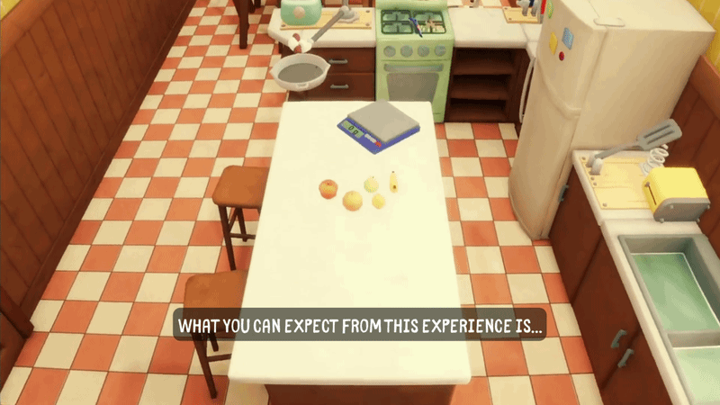
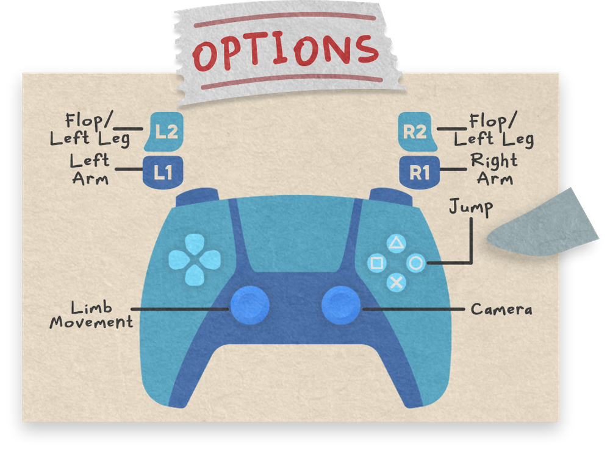
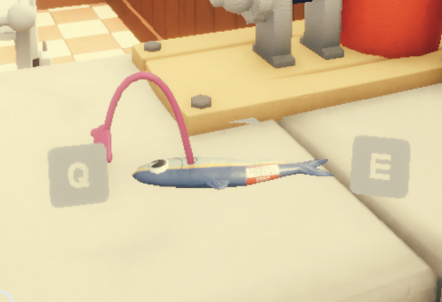
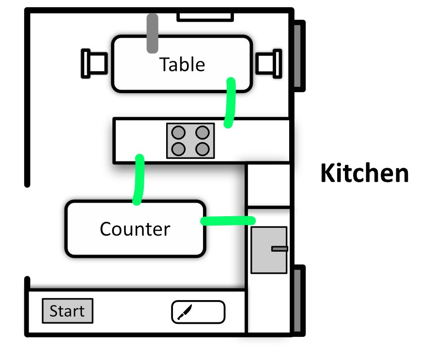
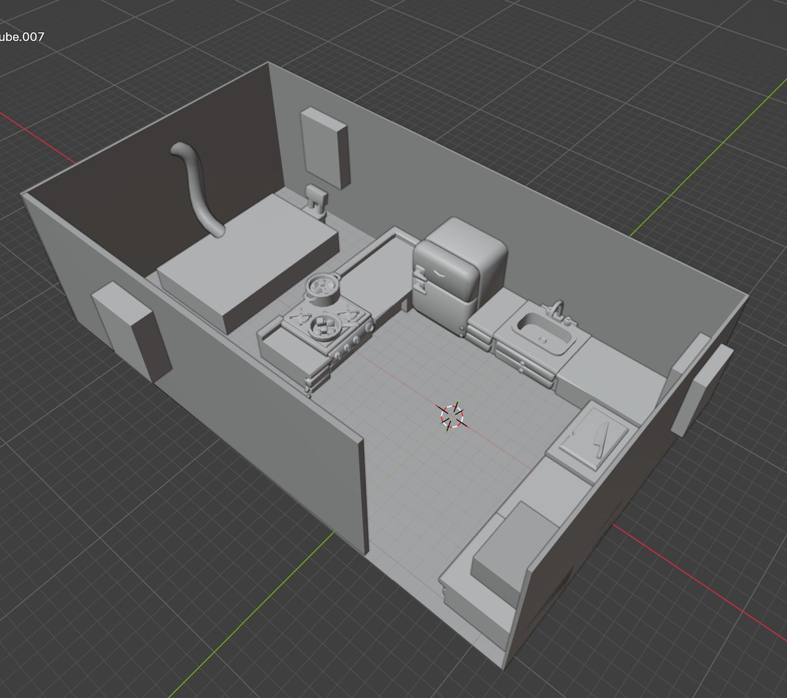
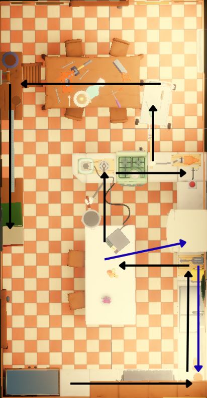

Challenge
- Give players a clear goal, but still make them want to explore, experiment and poke at the environment.
- Make every stage of progression feel like it matters, instead of just handing players more ways to move.
Case Study
A physics-based puzzle platformer with deliberately difficult controls, where a sardine named Sardonious just wants to be a man.
Fish Can Man

Engine & Tools
You play as Sardonious, a sardine who flops out of his tank and sets off to find the magical kraken who can grant his wish of becoming more human. Along the way you collect limbs, solve physics puzzles and gather items, all while wrestling with controls that are difficult on purpose.
We made it as a 3-person team in five months, and it won Best Student Project at Level Up KL 2026.
Scientist's House
Obstacles & puzzles
Body limbs
Active background threat, ticking the whole time





Working on Fish Can Man taught me how to take a research idea and turn it into gameplay systems that a whole team could actually build. My biggest challenge was making sure every new mechanic added something without making the earlier abilities feel useless.
I also learned how much clear documentation and level blockouts matter when you're passing your design intent on to the programmer and 3D artist. With more time, I'd add more reasons to go back and re-explore, and test the game with a bigger group of players.